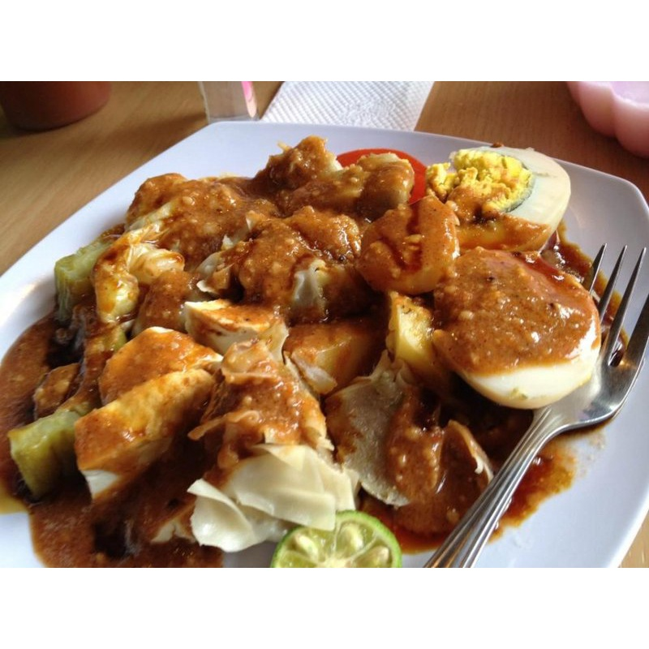

This page is containing somay recipes

Description:
Somay, also known as Siomay, is a type of Indonesian street food and snack. It consists of steamed or boiled
dumplings filled with a mixture of fish and/or shrimp. The dumplings are often served with a flavorful peanut sauce
and other condiments.
Ingredients:
For the Dumplings:
- 250g fish fillet (can use a combination of fish and shrimp)
- 1 egg
- 2 cloves garlic, minced
- 1 teaspoon salt
- 1/2 teaspoon sugar
- 1/4 teaspoon white pepper
- 1 tablespoon tapioca flour or cornstarch
- Wonton or dumpling wrappers
For the Peanut Sauce:
- 1 cup peanuts, roasted and ground
- 2 cloves garlic, minced
- 2 tablespoons sweet soy sauce (kecap manis)
- 1 tablespoon tamarind paste
- 1 teaspoon palm sugar or brown sugar
- 1/2 teaspoon salt
- 1 cup water
Steps:
- Prepare the Dumpling Filling:
-
In a food processor, combine fish fillet, egg, minced garlic, salt, sugar, white pepper, and tapioca flour. Process until you get a smooth and well-combined mixture.
- Assemble the Dumplings:
- Place a small amount of the filling in the center of each dumpling wrapper.
- Fold the wrapper over the filling and seal the edges, forming a half-moon shape.
- Steam the Dumplings:
- Arrange the dumplings in a steamer basket, leaving some space between each.
- Steam for about 15-20 minutes or until the dumplings are cooked through.
- Prepare the Peanut Sauce:
- In a saucepan, combine ground peanuts, minced garlic, sweet soy sauce, tamarind paste, palm sugar, salt, and water.
- Cook over medium heat, stirring constantly until the sauce thickens. Adjust the seasoning to taste.
- Serve:
- Arrange the steamed dumplings on a plate and serve with the prepared peanut sauce.
- Optional Garnishes:
- Garnish with fried shallots, sliced cucumber, and steamed cabbage leaves.
.